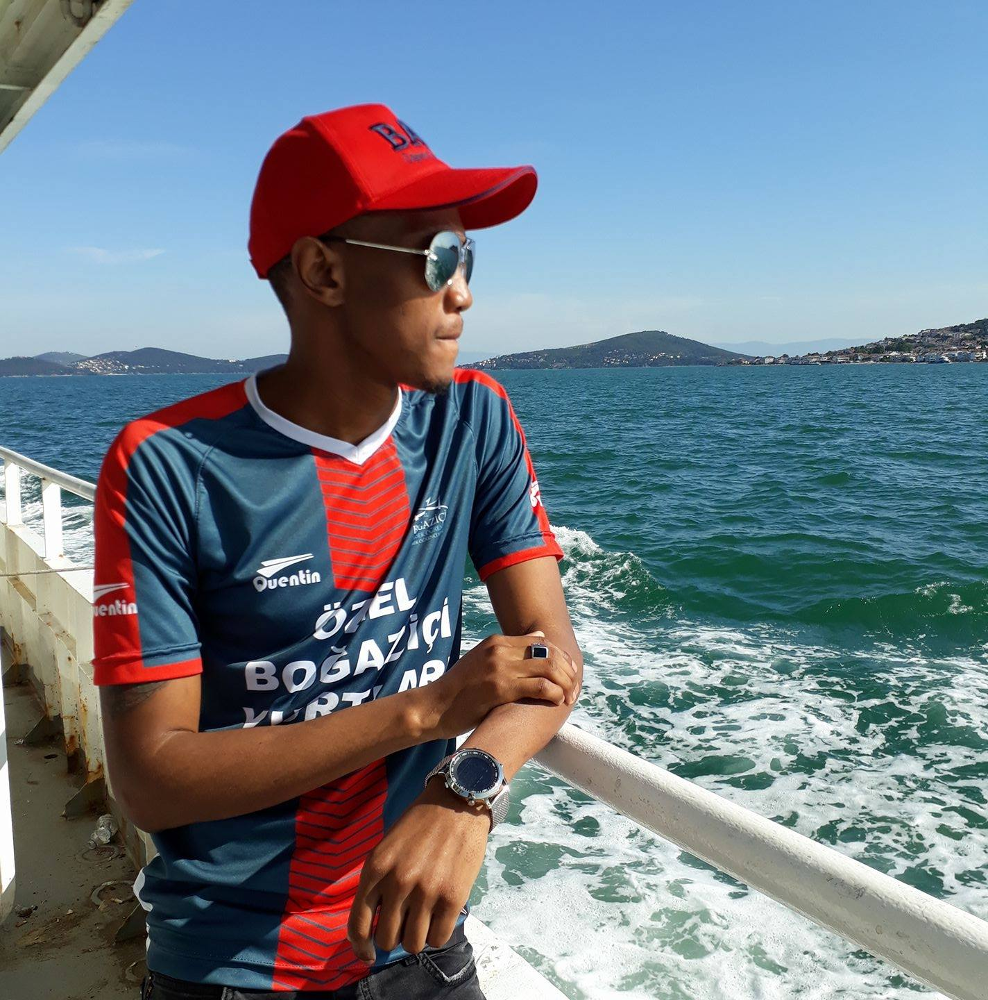
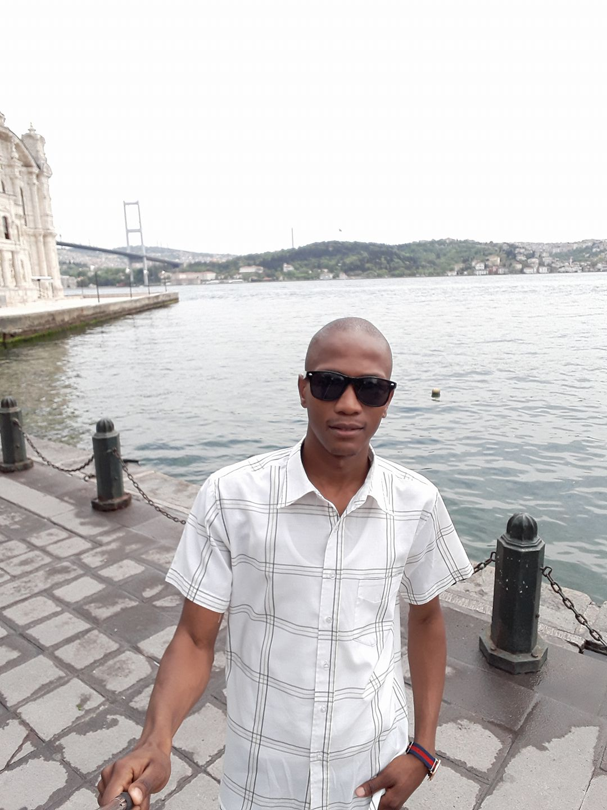
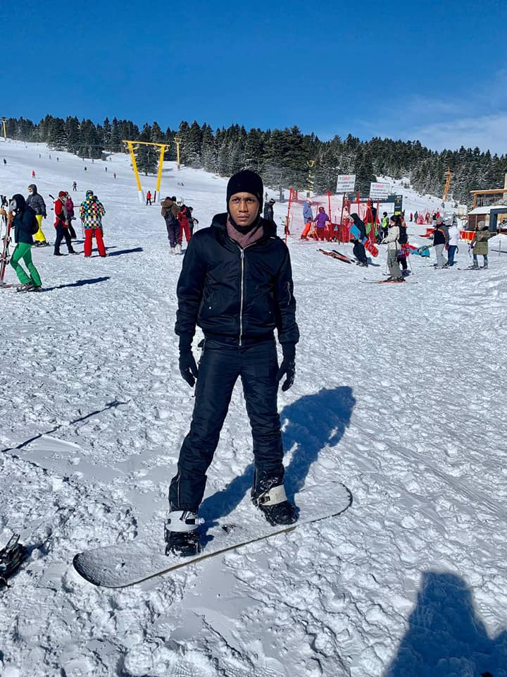
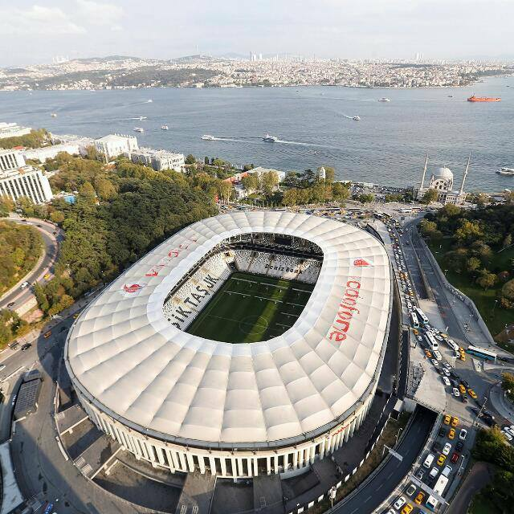

Tsepang Motsie
City: Istanbul
Istanbul is a major city in Turkey that straddles Europe and Asia across the Bosphorus Strait. Its Old City reflects cultural influences of the many empires that once ruled here. In the Sultanahmet district, the open-air, Roman-era Hippodrome was for centuries the site of chariot races, and Egyptian obelisks also remain. The iconic Byzantine Hagia Sophia features a soaring 6th-century dome and rare Christian mosaics.
Foreign Languages: Swahili
I would love to learn Swahili because it sounds amazing and it is also the most commonly spoken Agrican language.
| English | Swahili |
|---|---|
| Hello | Habari |
| My name is Tsepang | Jina langu ni Tsepang |
| I am pleased to meet you | Nimefurahiya kukutana nawe |
| Welcome to my city | Karibu mjini kwangu |
Favorite Subjects
Web Development
4IR Technologies
Engineering Business Systems
Historical Places
The Bosphorus
İstanbul Boğazı is a narrow, natural strait and an internationally significant waterway located in northwestern Turkey. It forms part of the continental boundary between Asia and Europe, and divides Turkey by separating Anatolia from Thrace. It is the world's narrowest strait used for international navigation.
Uludağ Ski Resort
Standing out with its fun atmosphere as well as its structure suitable for skiing, Uludağ Ski Resort offers its guests with comfortable accommodation facilities and restaurants. Uludağ Ski Resort has 11 main tracks in total, and there are ski tracks in alpine style, snowboard, cross country, heli skiing styles.
Vodacom Park
Vodafone Park is an all-seater, multi-purpose stadium in the Beşiktaş district of Istanbul, Turkey.It is the home ground of Beşiktaş JK. The stadium was built on the site of Beşiktaş's former home, BJK İnönü Stadium. It has a capacity of approximately 42,590 spectators, after initially being planned for 41,903.
